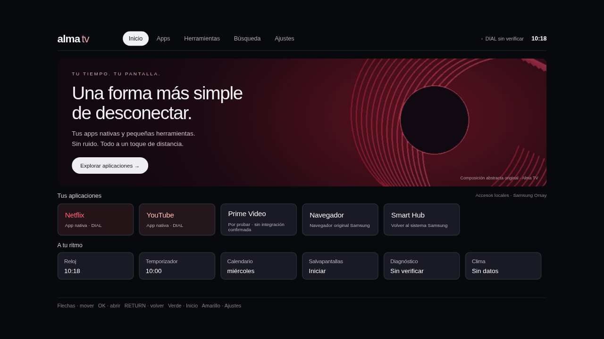
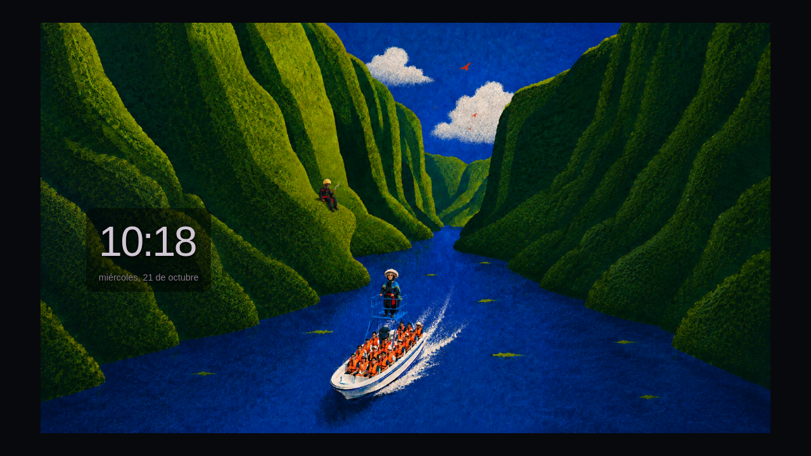

Capturas a 1280×720. Nuevo diseño según la referencia lateral del chat, adaptado al tema claro solicitado. Tu ilustración se conserva sin modificar. La tarjeta Xbox intenta seleccionar HDMI 2 solo cuando lo pides; el firmware real aún debe validarse.
La fila de accesos guardados sustituye al historial de streaming que Alma TV no puede leer. Los logotipos no añaden compatibilidad. Clima requiere puente Mac y no se inventa cuando falta.


Las capturas de diagnóstico y clima marcadas como respuesta de prueba no demuestran una conexión real a tu TV ni una temperatura observada. Revisa el diseño antes de sincronizar manualmente.